Overview
Give a high-level overview of what you implemented in this homework Think about what you've built as a whole. Share your thoughts on what interesting things you've learned from completing the homework.
I learnt in this homework how to apply the theory in lecture on rausterization to a more hands on approach. I used copilot to assist me in the assignment, one main help was to enumerate formulae described in lecture. Sometimes they were different in form however I would check by hand that the 2 equations were equivilant and have learnt alternative ways of representing said formulae. I also used it for some simple syntax help as I am still relatively unfamiliar with cpp and html i.e. helping me insert images into this documentSection I: Rasterization
Part 1: Rasterizing single-color triangles
We rasturized the triangle through checking each possible pixel and checking using the 3 line rule whether or not the point was in the triangle and coloring it accordingly. My algorithm is no worse than the one that checks each sample within the bounding box of the triangle as I loop on the maximum and minimum x and y which is the box. 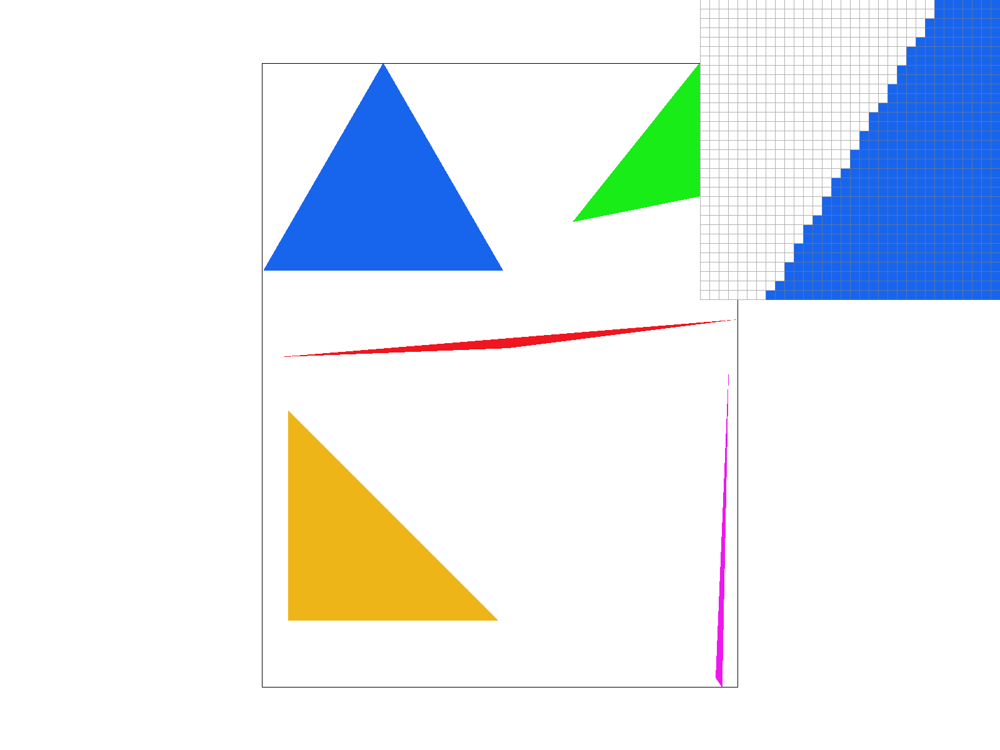 Some optimizations I did to speed up the rasturization was to precalculate the dXi and dYi values so I didn't have to recalculate it each loop. Additionally I added an if check after the first two lines so the third calculation wouldn't be made if it the point was on a different side for the first two lines.Here is an example 2x2 gridlike structure using an HTML table. Each tr is a row and each td is a column in that row. You might find this useful for framing and showing your result images in an organized fashion.

|

|

|

|
Part 2: Antialiasing triangles
I used a sample buffer to be an inbetween state between the rasturization and the display buffer. The sample buffer is sized based on the sample rate and I edited fill pixel to fill in extra based on the sample rate. I also changed the final function resolve_to_framebuffer() to include transfering over the data in the sample buffer. This was able to antialias my triangles because I was able to take more samples per pixel and average the color values 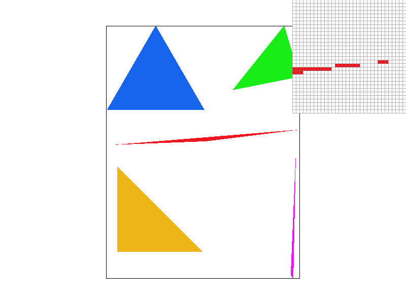 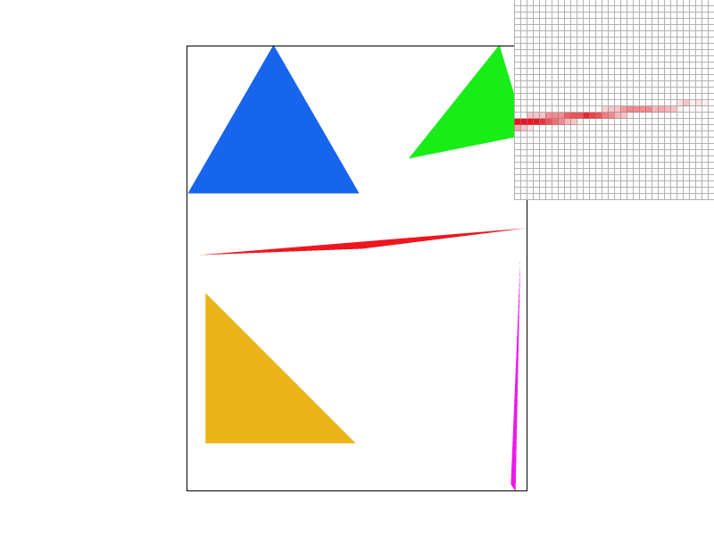Part 3: Transforms
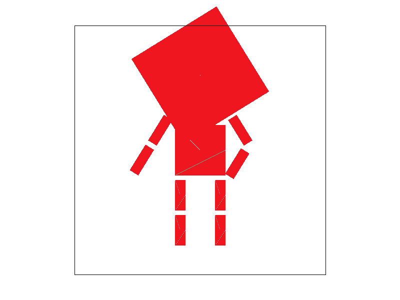 My robot is very big brain, so much so that he is thinking outside the box (literally!). He has one arm on his hip and his other arm waving fustratedly as he tries to teach computer graphics to me.Section II: Sampling
Part 4: Barycentric coordinates
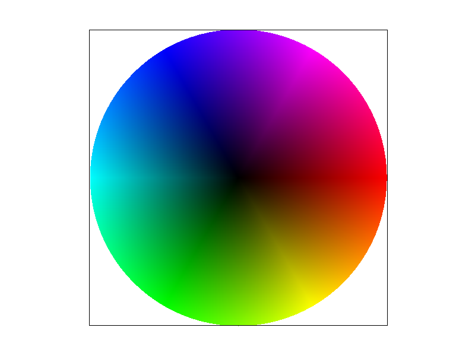 Barycentric coordinates are a ratio of how far a point is away from each corner of the triangle or how much "pull" a certain corner has towards a point. This is shown in the traingle with each corner having a different color and the color of the point being a mix of the three colors based on the barycentric coordinates. 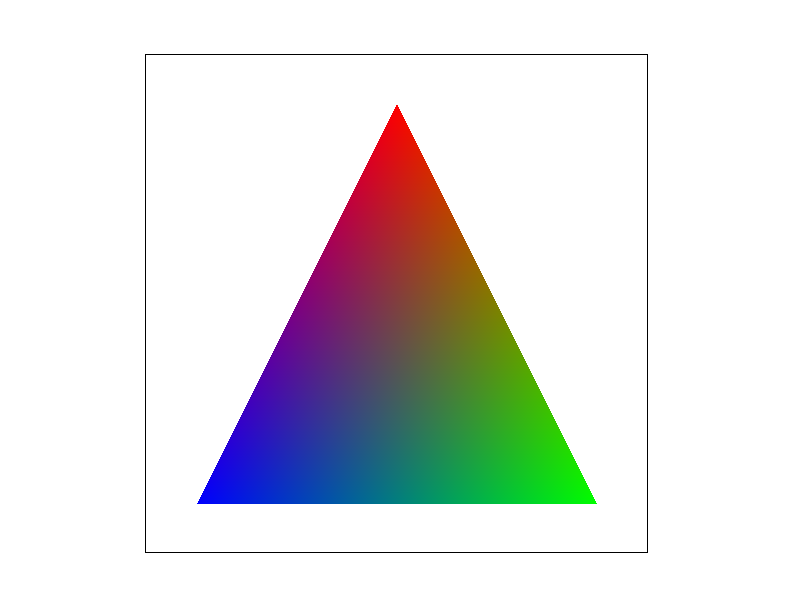Part 5: "Pixel sampling" for texture mapping
Pixel sampling is the process of sampling the texture to get the color of a pixel for the display frame. Nearest pixel sampling just takes the nearest point in the texture map and maps that to the display. Bilinear takes the 4 pixels in the square surrounding the point and averages them taking into account weighting of how far away it is. nearest 1 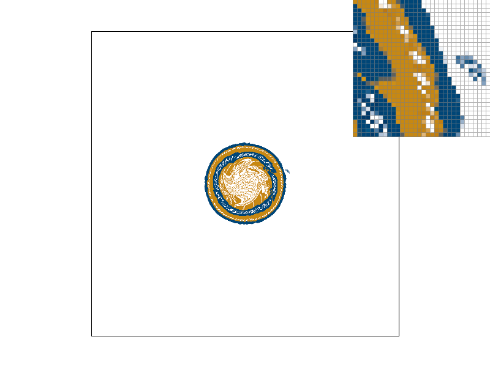 Bilinear 1 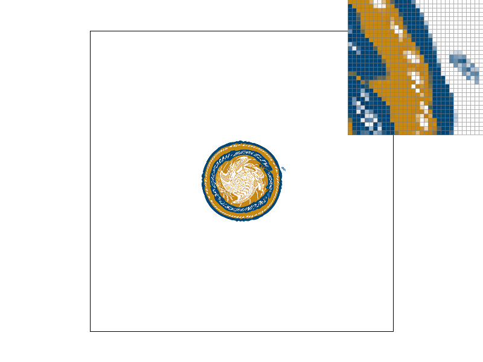 Nearest 16 Bilinear 16
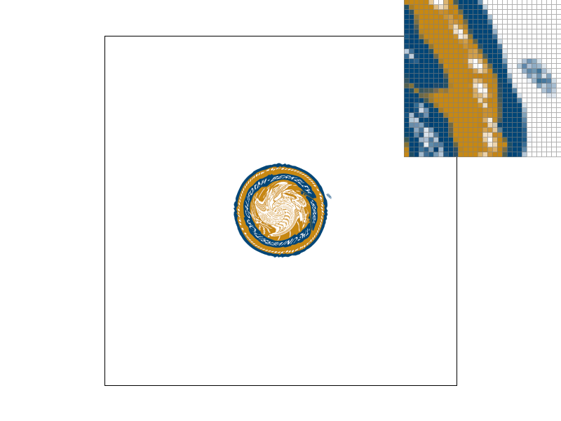
As seen clearly in the first 2 images, Bilinear beats out nearest in rendering the small blue blob outside of the seal. Wheras in nearest the blob appears to have a deep cut in the middle, the Bilinear rendering has a much smoother appearence. This is similarly shown in the 16x supersampling however a lot less pronounced.
Bilinear 16
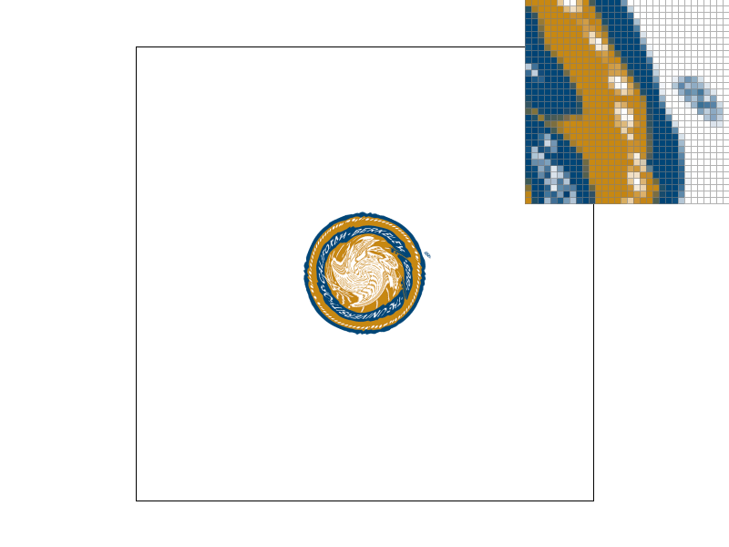
As seen clearly in the first 2 images, Bilinear beats out nearest in rendering the small blue blob outside of the seal. Wheras in nearest the blob appears to have a deep cut in the middle, the Bilinear rendering has a much smoother appearence. This is similarly shown in the 16x supersampling however a lot less pronounced.
Part 6: "Level sampling" with mipmaps for texture mapping
Level sampling involves using mipmaps of different sizes to sample the texture. We implemented it with 3 types of sampling. The basic level 0 mipmap which is the same as just sampling the base texture, nearest level sampling which sampled the nearest integer level calculated using the formula given in class involving barycentric coordinates nad vectors, and linear sampling which was an average of the 2 closest levels. Lower levels of the mipmap are the most detailed however they are also the most expensive to sample. Higher levels are less detailed but are cheaper to sample. This would mean that at level 0, the image should be the clearest however it would be the slowest and take the most memory, it could also alias easily as it could be too detailed for the display frame. Nearest level and linear level are similar as they both use roughly similar levels of the mipmaps, however linear level is more expensive as it averages the 2 levels. This is however contrasted by the more smoother nature of the linear level as it avoids abrupt changes in the texture that might've resulted from the less detailed mipmaps. In terms of memory usage, nearest level is the most efficient as it only uses 1 level of the mipmap, linear level uses 2 levels and level 0 uses the most memory as it uses the base texture. The 4 images are in the order given in the spec 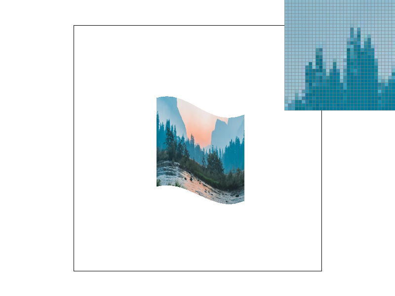Section III: Art Competition
If you are not participating in the optional art competition, don't worry about this section!